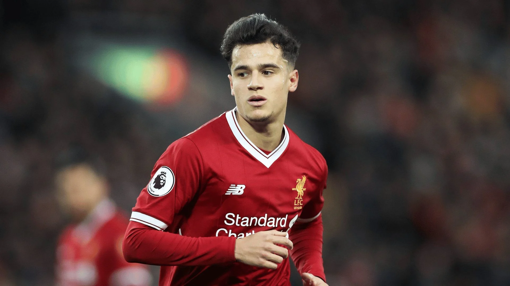

At this moment, you may be expecting to see names such as Messi or Ronaldo etc...
the button below will display the real GOAT of the sport.
This player is the most underrated player in football history. Carrying Liverpool on his back from 2015 to Jan 2018 is not spoken about enough; Netting the most goals outside the box from a brazilian premier league player, scoring screamers on back to back premier league opening days (2015/16 + 2016/17) both away from home too, being nominated for balon d'or in 2017 and just carrying Liverpool with his magic, week in week out.
